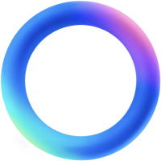

<app-header id="chats-header" slot="top" ></app-header>

<ion-content [fullscreen]="true" mode="ios">
  <ion-list lines="inset">
    <app-item-chat
      *ngFor="let chat of chats"
      [username]="chat.username"
      [message]="chat.message"
      [date]="chat.date"
      [avatarUrl]="chat.avatarUrl"
    ></app-item-chat>
  </ion-list>
  <ion-fab horizontal="end" vertical="bottom" slot="fixed">
    <ion-fab-button>
      
    </ion-fab-button>
  </ion-fab>
</ion-content>
